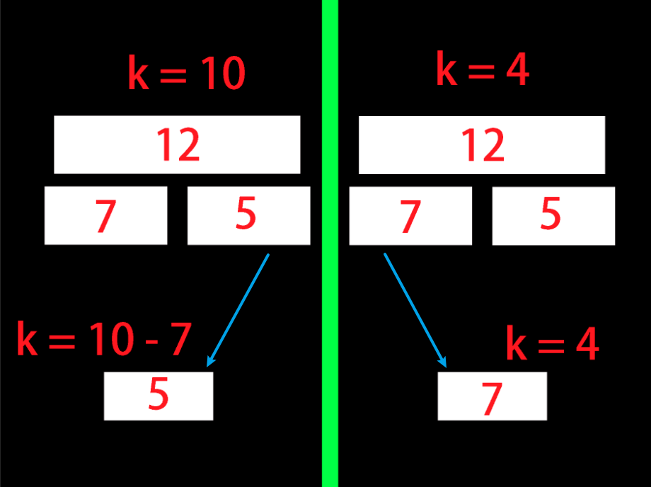

功能
维护一个集合，操作包括：插入一个数 x，删除一个数 x，求 x 的排名，求集合第 k 大，求 x 的前驱，求 x 的后继
要求
离线，（需要离散化）或者是（值域很小且没有多测）。
核心：树状数组上二分
树状数组上二分是用来求全局第 k 大的，功能是在 O(logn) 的时间复杂度内求出前缀和大于等于 k 的第一个位置。这个操作实际上实在帮我们求出 kth
先放代码
1
2
3
4
5
6
7
| int kth(ll k) {
int x = 0;
for(int i = 1 << __lg(n); i; i >>= 1)
if(x + i <= n && tr[x + i] < k)
k -= tr[x += i];
return x + 1;
}
|
在讲解之前，先来复习一下树状数组中 tr[x] 的含义：
trx=i=x−lowbit(x)+1∑xai
也就是说 tr[x] 表示 [x−lowbit(x)+1,x] 的区间和，该区间的长度为 lowbit(x)。

先抛开树状数组，如果我们需要二分地找到前缀和小于 k 的最后一个位置，需要怎么做。先将现有区间分成两部分，如果第一部分的区间和小于 k，我们就在第二个区间中讨论，同时 k=k−∑i=lmidai；否则直接进入第一个区间。这种思路在线段树上二分和平衡树求 kth 很常见。
回到代码层面，i 表示现在考虑的子区间的长度，从 2⌊log2n⌋ 到 1，每次减半（由于 n 不一定为 2 的幂次，而为了方便二分，令 i 为 2 的幂次而不是 n。）。x+1 表示当前区间的左端点。由于 x 从 0 开始，而 lowbit(i) 是不断递减的，所以 lowbit(x+i)=lowbit(i)。这保证了 tr[x + i] 的区间为 [x+1,x+i]，正好满足了二分区间的要求（再提一下 i 为子区间的长度）。
现在开始二分操作，如果 tr[x + i] < k（记得先判越界），那么执行走右边的策略，k -= tr[x + i]，同时下次考虑的区间，左端点为 x+i+1。根据 x 表示考虑区间的左端点，将 x 改为 x+i。反之走左边，区间端点不变，k 的值不变，所以不需要操作。
这样我们就找到了最后一个前缀和小于 k 的位置 x，x+1 就是第一个前缀和大于等于 k 的位置，也就是我们要求的 kth
六个操作的完整代码
要插入一个数 x，只需要单点修改 a[x]++，即 tr.modify(x, 1)
要删除一个数 x，只需要单点修改 a[x]--，即 tr.modify(x, -1)
要求一个数的排名，只需要求小于 x 的数的个数，然后加 1。tr.query(1, x - 1) + 1
要求全局第 k 大，使用上文的树状数组上二分。
要求 x 的前驱，找到小于 x 的数的个数 k = tr.query(1, x - 1)，然后求 kth(k)
要求 x 的后继，找到小于等于 x 的数的个数 k = tr.query(1, x)，然后求 kth(k + 1)
太板子了这题没什么可以讲的
1
2
3
4
5
6
7
8
9
10
11
12
13
14
15
16
17
18
19
20
21
22
23
24
25
26
27
28
29
30
31
32
33
34
35
36
37
38
39
40
41
42
43
44
45
46
47
48
49
50
51
52
53
54
55
56
57
58
59
60
61
62
63
64
65
66
67
68
69
70
71
| struct fenwick : vector<ll> {
int n;
fenwick(int n) : n(n), vector<ll> (n + 1) { }
void modify(int p, int k) {
for(int x = p; x <= n; x += (x & -x)) {
at(x) += k;
}
}
int query(int l, int r) {
ll res = 0;
for(int x = r; x; x -= (x & -x)) res += at(x);
for(int x = l - 1; x; x -= (x & -x)) res -= at(x);
return res;
}
int kth(ll k) {
int x = 0;
for(int i = 1 << __lg(n); i; i >>= 1)
if(x + i <= n && at(x + i) < k)
k -= at(x += i);
return x + 1;
}
};
template<class T>
struct lsh : vector<T> {
template<class it>
lsh(it l, it r) : vector<T>(l, r) {
sort(this -> begin(), this -> end());
this -> erase(unique(this -> begin(), this -> end()), this -> end());
};
int rank(int x) {
return lower_bound(this -> begin(), this -> end(), x) - this -> begin() + 1;
}
T kth(int x) {
return this -> at(x - 1);
}
};
void solve() {
int n;
cin >> n;
vector<ll> tmp;
vector<pair<int, ll>> a(n + 1);
fu(i, 1, n) {
cin >> a[i].fi >> a[i].se;
if(a[i].fi != 4) tmp.eb(a[i].se);
}
lsh<ll> mp(tmp.begin(), tmp.end());
fenwick tr(mp.size());
fu(i, 1, n) if(a[i].fi != 4) {
a[i].se = mp.rank(a[i].se);
}
for(int i = 1; i <= n; ++i) {
auto [op, x] = a[i];
if(op == 1) {
tr.modify(x, 1);
} else if(op == 2) {
tr.modify(x, -1);
} else if(op == 3) {
cout << tr.query(1, x - 1) + 1 << endl;
} else if(op == 4) {
cout << mp.kth(tr.kth(x)) << endl;
} else if(op == 5) {
cout << mp.kth(tr.kth(tr.query(1, x - 1))) << endl;
} else {
cout << mp.kth(tr.kth(tr.query(1, x) + 1)) << endl;
}
}
}
|